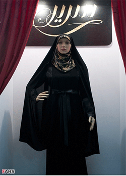

|
|

رونمایی از «چادر مانتو» با حضور مردان بنیاد گرا در ردیف اول مراسم
چهار شنبه11 مرداد 1391
شهرزادنیوز: مراسم رونمایی از نخستین «چادر مانتو»، با حضور مردان بنیاد گرای صاحب مقام در ردیف اول جایگاه، در غرفه عفاف و حجاب بیستمین نمایشگاه بینالمللی قرآن برگزار شد.
در این مراسم لاله افتخاری، یکی از 8 نماینده زن در مجلس 290 نفره و رئیس «فراکسیون قرآن و عترت مجلس شورای اسلامی»، که به داشتن افکار مردسالارانه معروف است، طی سخنانی گفت که امروز برای «امر مهمی همانند طراحی چادر» و تشویق کسانی که این این پوشش را که «حجاب و عفت مارا تضمین می کند» دور هم جمع شده ایم.
به گزارش فارس، وی در بخش دیگری از سخنانش گفت که زنان خارجی چادر زن مسلمان ایرانی را نماد استقلال، مقاومت، پایداری، عفاف و حجاب میدانند. و افزود که برخلاف گفتههای «دشمنان»، چادر زن ایرانی نشاندهنده فرهیختگی، استقلال و تفکر والای اوست.
وی در پایان خواستار آن شد تا بروشورهایی تهیه شود که «ارزش چادر، برای همگان» به تصویر کشیده شده و از طرف دیگر تأکید کرد که باید «چهره افرادی که در گذشته و حال، علیه چادر فعالیت میکنند» شناخته شود.